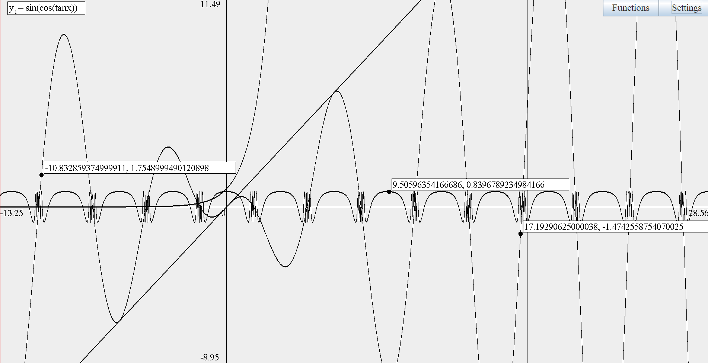
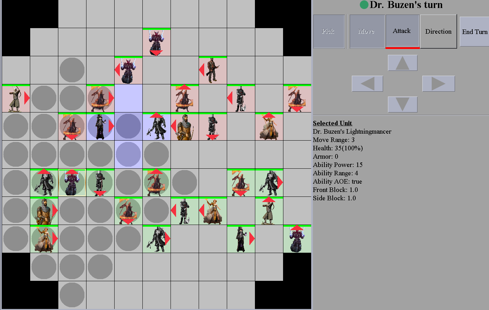
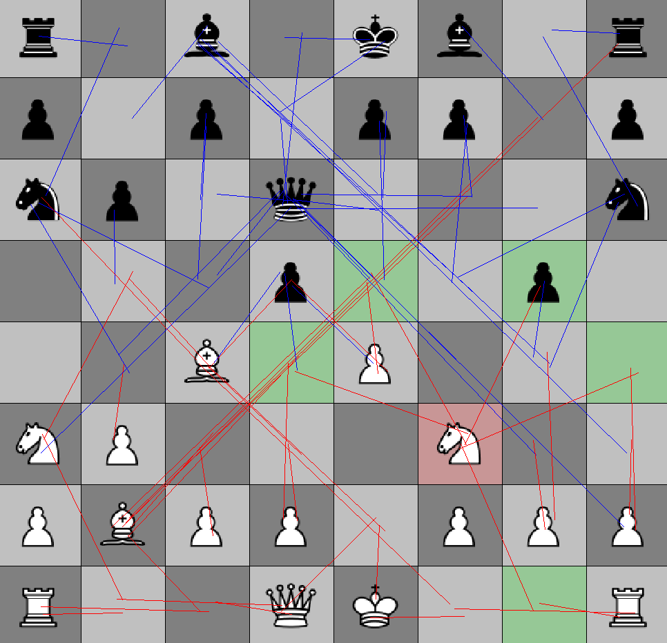
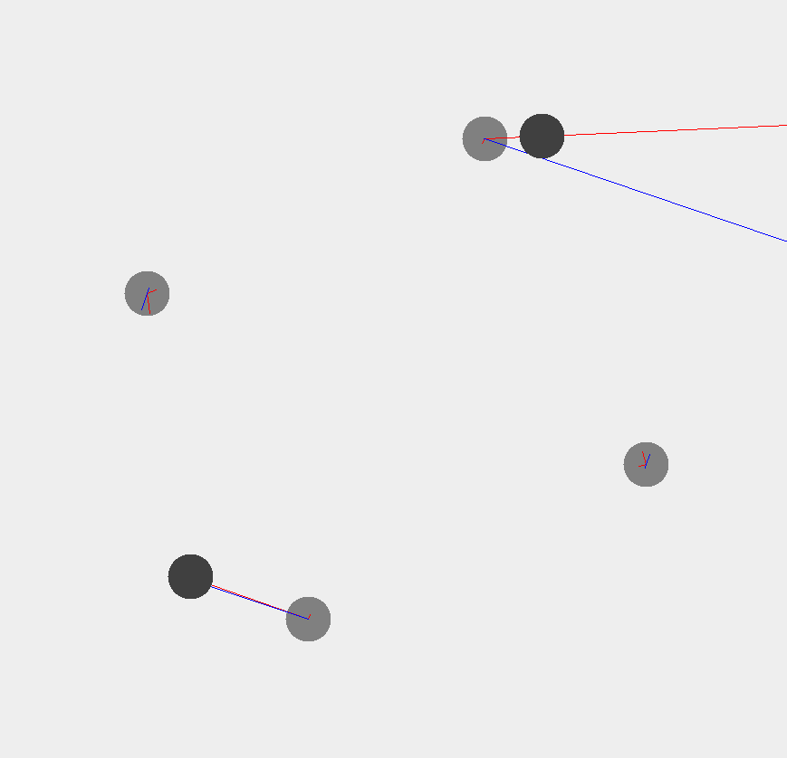

Akarsh Kumar
Hi! My name is Akarsh and I'm a programmer and physics/math researcher aspiring to dive heavily into the fields of machine learning and particle physics.
I am currently a Computer Engineering and Physics major at UT Austin in the class of 2022. I hope to pursue an education, research, and career in computer science, physics, and math. I immerse myself in these fields whenever possible because of my curiosity with them. Although they may seem like completely different topics, I see them as different aspects of the same entity. I see math as a universal native language of the universe, physics as a real implementation of mathematical systems and ideas, and computer science as a convientant tool to explore mathematical realms further (as well as introduce new math concepts like complexity theory). I want to pursue a PhD in one or two of these subjects and help our species understand the world better.
Born in India, my family moved to the United States in 2005 where we lived in Arkansas, Florida, Iowa, and now Texas. I went to the Arkansas School for Mathematics, Sciences, and the Arts, where I discovered my love for computer science, physics, and math through classes like Algorithms and Data Structures, Modern Physics, Astrophysics, and Differential Equations. My dad is a civil engineer in the Irving area, while my mom is a college professor. My 22 year-old brother recently graduated with a degree in computer engineering from the University of Toronto and is now attempting to start his own company.
Thanks for visiting! Check out my website below.
Downloads:
Akarsh Kumar Resume
Experience
Machine Learning Project
Description:
During the summer of 2018, I created this abstract deep neural network that can find an association between any two sets of data using a stochastic gradient descent approach. This neural network was built from complete scratch and was trained to recognize handwritten digits and number of veritcal and horizontal lines in an image (as well as find a pattern in the primes, but that failed).
Intense mathematical calculations, optimization problem, multithreading, abstraction for any dataset, visual display.

Get source
Computer Algebra System and Graphing Calculator
Description:
Created a Java desktop application that parses mathematical text into a logic tree (can be used to evaluate the expression as well as take the derivative of it, etc). Used this computer algebra system to render functions in a movable and scalabe graphical output.
Multithreading, Java Swing graphics, Equation trace, Support for multiple graphs in one plot, Math parser (String to Binary Tree), Interactive drag UI.
Get source
FIRM Project
Description:
Physics-based project that was conducted as part of the Fundamentals in Research Methods (FIRM) program at ASMSA. The goal is to optimize photovoltaic cells for monochromatic laser light. Applications include but are not limited to laser power beaming and fiber optic energy transfer. In a nutshell, I worked on “tuning” the bandgap frequency of the semiconductor in the PV cell to the laser’s frequency. I used Shockley and Queisser’s techniques (“Detailed Balance Limit of Efficiency of PN Junction Solar Cells”) to find the theoretical maximum efficiency of a laser-PV cell system using mathematics. I am currently continuing this research in bandgaps of semiconductors (using simulations) at UT Austin under Dr. Seth Bank.
Advisor:
Dr. Brian Monson
Concepts:
Black body spectrum, Laser spectrum, Planck’s equation, Semiconductor (PV cells), Photovoltaic effect, Detailed balance limit.
Challenges:
Complex calculus integrations, Combining Shockley and Queisser’s equations for laser applications.
Downloads:
Research Poster
Research Presentation
Research Paper PDF
Strategic Anomalies
Description:
Worked with a college student to revive a popular strategy game called Tactics Arena Online that thrived in the 2000s but mysteriously shut down. I was the only programmer on the team. The goal of this project was publish the game online and create a community of players.
Multithreading, IO Streams, File IO, Algorithms (shortest path and sorting), Java Swing graphics, Multiplayer support, Database connections, Action listeners, Java Sockets, Server-client setup, Game mechanics.
Computer Programming 3 and Graphics Programming
Description:
In my favorite programming class (CP3/Algorithms and Data Structures), we made programs that generated and solved mazes, found shortest paths using A*, found the efficiencies of a hashtable and self-balancing binary search tree, and optimized a building scenario. In Graphics Programming, we used Python to alter images with matrix transformations and kernals (guassian blurs, edge/corner detection, etc). We used seam carving reduce image sizes while keeping valuable aspects unchanged and compress images using custom algorithms. I also created my own custom QR code named "akarz" and was able to transfer text information through reading in images with my QR code on them.
Advanced algorithms, Multithreading, Java Swing graphics, Python numpy.
Presentations:
Maze Generation and Solving Algorithms PDF
Path Finding Algorithms PDF
Hash Table PDF
Self Balancing Binary Search Tree PDF
City Simulator PDF
Image Transformations PDF
Image Seam Carving Reduction PDF
Panorama Creation PDF
Image Kernel Alterations PDF
Image Compression PDF


Free Geek Volunteering
Description:
Created a Java desktop application to keep track of volunteering hours and manage admin access and statistics reports. The application was made for Free Geek, a non-profit technology recycling organization located in Fayetteville.
Storing data offline, File IO, Java Swing library, Professional UI & UX, User logins (ACL, admin, guest accounts).
Contact:LibAK
Description:
This Library is an acumulation of all things that I have made that could be useful in the future. It includes everything from neural networks and genetic algorithms to the computer algebra system and graphing library. It also includes functions for useful abstract methods and allows altering arrays in Java to be easier than in Python! Using this library, you can get started with a GUI application much faster than in vanilla Java and makes serialization of objects and managing a program's history state easier than ever. It also includes many useful functions needed for Project Euler and is very diverse in nature.
Combining all programs made from before, abstraction of all methods within (universal use in other applications)
Get LibAK sourceMatchmaking Algorithm Competition
Description:
A program for Valentine’s day matchmaking. The project was part of a competition hosted by Fayetteville High School. The program matched couples based on a survey. The algorithm was based on a fair model where the candidates with the lowest chances for a match had priority.
Java Swing library, Algorithm, Storing data on Hard Drive, Interactive UI.
Chess
Description:
Made a chess program with programmed rules. Did many computations using this for my grand master friend. Implemented a basic minimax AI to run on this (not fully functional yet).
Java swing graphics library, Algorithm, Interactive UI.
Physics Magnets Simulation Program
Description:
When I was younger, I attempted to build a perpetually spinning motor using magnets. Obviously, it failed to work, but after a few years, I built a program modeling the behavior of the system. This program let me see the theoretical flaws in the design.
Modeling Calculus with Discrete Computer Loops, Physics Equations, Vector Calculus.
Education
UT Austin (Class of 2022)
STEM GPA: 4.00
EE 306 - Intro to Computing with LC-3 simulator
EE 302 - Intro to Electrical Engineering
M 427J - Differential Equations with Linear Algebra
Current classes:
EE 319K - Intro to Embedded Systems
EE 312 - Intro to Software and Design
EE 411 - Circuit Theory
M 340L - Matrices
M 325K - Discrete Math
M 427L - Vector Calculus
Arkansas School of Math, Science, and the Arts (Class of 2018)
Weighted GPA: 4.25
Math - AP Cal AB, Cal 2, Cal 3, Differential Equations, Discrete Math, Number Theory
Physics - Physics for Scientists & Engineers 1 and 2, Modern Physics, Astrophysics
CS - AP CS, Data Structures and Algorithms(CP 3), Graphics Programming
Cool clubs:
Community Leader (CL) - alonside 11 other CL's, our job was to support our peers living on the highschool campus academically and emotionally and look out for their general mental health.
Computer Science club - as part of the computer science club we discussed the lates fields of computer science and went to several computer programming competitions (won UARK highschool coding competition, biggest coding comp in Arkansas, twice)
Highschool transcript and test scores
Personal Philosophy on Physics, Math, Computer Science
I believe math is embedded into nature and is only being discovered by humans. Maybe math is the language of God, or maybe it is the language used by the species simulating our universe. Some people try to argue that math is merely a tool invented by humans to study our universe, but it seems much to useful and elegant for us to have invented it or it to have been a coincidence (Is God a Mathematician?).
Math, physics, computer science (and the logic of computation), are all connected in deep ways that we currently barely understand. Not only are we only starting to learn about these connections, I believe we have uncovered less than 1% of the potential landscape for us to explore. We need to keep studying these fields in rigorous detail to understand the world around us.
Why I study Math, Physics, and Computer Science
There is a certain empowering feeling about completely understanding a physics, math, or computer science idea that I can fully explain. Maybe its because it makes me feel powerful in knowing something. Or maybe because it represents all the innovation and inventions that can result from understand the idea. Sometimes it even feels like a philisophical/religious inquery on our universe mutated into a STEM explanation. Whatever the reason is, it has shaped my career and goals into adventuring through physics, math, and computer science in one way or another.
Skills
I am fluent in using Java and Eclipse to develop Desktop programs of any kind. I have done computer vision work in python (opencv and numpy). Have lots of expierence in developing iOS and Android applications also.Awards
- 2017 AP Scholar With Distinction.
- 2014-2016 ACTM Algebra 2 and Pre-calculus State Award.
- UARK Fayetteville Programming Competition Winner x2.